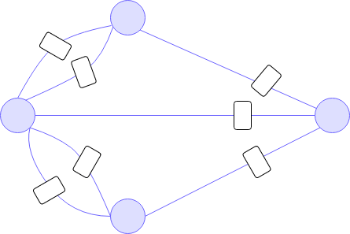

Algoritmos mas Destacados
Problema de los puentes de Königsberg
Éste fue el problema que introdujo a los Grafos por primera vez. Todos
tenían una pregunta, ¿Se pueden cruzar los 7 puentes de Königsberg sin
reptetir ningún puenten?

Leonhard Euler se decidió unir a ésta multitud, decidió representar
cada lugar dónde hay tierra con puntos y los puentes con lineas.
Cuándo acabó de unir todo, formó lo que fue el primer grafo.

Con ésto dedujo dos cosas:
• Si el grafo tiene más de dos nodos de grado
impar, no existe dicho camino.
• Si el grafo es conexo y no tiene más de dos
nodos de grado impar, al menos hay un camino.
Aqui nació la teoría de redes; La existencia
del camino es una propiedad intrínseca del grafo. Las redes tienen
ciertas propiedades ocultas en su estructura que limitan o mejoran su
comportamiento
Algoritmo de Solin
1. Construir la matriz de incidencia.
2. Seleccionar el mínimo/máximo elemento de la matriz y marcarlo. Si
hay varios se escoge uno al azar.
3. Eliminamos la columna del elemento marcado y seleccionamos la fila
correspondiente a la columna eliminada.
4. De entre los elementos de las filas seleccionadas, que no hayan
sido eliminados, tomamos aquél mínimo/máximo y repetimos el proceso
del paso anterior hasta que no se puedan seleccionar más valores.
Algoritmo de Kruskal
1. Seleccionamos el arco de valor mínimo/máximo.
2. Seleccionamos un arco, de entre los que no estén seleccionados, que
tenga un extremo en común con éstos y de forma que no se genere un
ciclo, de todos los posibles arcos elegimos el mínimo/máximo.
3. Repetir el paso anterior hasta haber conectado todos los nodos.
Referencias
J. Rodríguez-Aragón, (2011) Teoría de Redes o grafos (pp. 7 & 19)
O. Cordón (s.f) Redes y sistemas complejos. Recuperado de:
https://sci2s.ugr.es/sites/default/files/files/Teaching/GraduatesCourses
/RedesSistemasCompejos/Tema02-AspectosBasicosdelasRedes-13-14.pdf
G. Michon (s.f) Graph Theory [imagen]. Recuperado de:
http://www.numericana.com/answer/graphs.htm